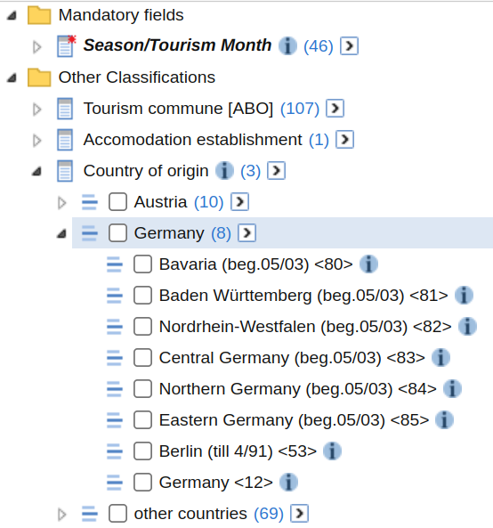

The function sc_table_custom() allows you to define
requests against the /table endpoint programatically. This
can be useful to automate the generation of /table request
rather than relying on the GUI to do so. The function accepts the four
arguments.
- A database id
- ids of measures to be imported (type
MEASURE,STAT_FUNCTIONorCOUNT) - ids of fields to be imported (type
FIELDorVALUESET) - a list of recodes that can be used customize fields
Bulding a Custom Table Step by Step
The first part of this Article will showcase how custom tables can be created with a database about tourism. This database will also be used in most other examples of this article.
Starting Simple
First, we want to just send the database id to
sc_table_custom(). This will request only the mandirory
fields and default measures for that database. In case of the tourism
database, a table with one single row is returned.
database <- "str:database:detouextregsai"
x <- sc_table_custom(database)
x$tabulate()# A STATcubeR tibble: 1 x 2
`Season/Tourism Month` `Nights spent`
* <date> <dbl>
1 2022-06-01 37162704Show json request
x$json {
"database": "str:database:detouextregsai",
"measures": [],
"dimensions": []
} We see that 37 162 704 nights were spent in austrian tourism establishments in the month of 2022-06-01.
Adding Countries
Now we want to add a classification to the table. This can be done by getting the database schema and showing all classification fields.
tourism <- sc_schema_db(database)
(fields <- sc_schema_flatten(tourism, "FIELD"))# A data frame: 4 × 2
id label
<chr> <chr>
1 str:field:detouextregsai:F-DATA1:C-SDB_TIT-0 Season/Tourism Month
2 str:field:detouextregsai:F-DATA:C-GEMREG-0 Tourism commune [ABO]
3 str:field:detouextregsai:F-DATA:C-BBTR_REG-0 Accomodation establishment
4 str:field:detouextregsai:F-DATA1:C-C93-2 Country of origin If we want to add “Country of origin” we need to include the fouth
entry of the id column in our request.
x <- sc_table_custom(tourism, dimensions = fields$id[4])
x$tabulate()# A STATcubeR tibble: 3 x 3
`Season/Tourism Month` `Country of origin` `Nights spent`
* <date> <fct> <dbl>
1 2022-06-01 Austria 12235755
2 2022-06-01 Germany 14343746
3 2022-06-01 other countries 10583203Show json request
x$json {
"database": "str:database:detouextregsai",
"measures": [],
"dimensions": [
["str:field:detouextregsai:F-DATA1:C-C93-2"]
]
} Alternatively, we could also pass the schema object for “country of origin”.
origin <- tourism$`Other Classifications`$`Country of origin`
x <- sc_table_custom(tourism, dimensions = origin)Adding Tourism Communes
The dimensions parameter in
sc_schema_custom() accepts vectors of field ids. Therefore,
we can add the communes easily.
x <- sc_table_custom(tourism, dimensions = fields$id[c(2, 4)])
x$tabulate()# A STATcubeR tibble: 321 x 4
`Season/Tourism Month` `Tourism commune [ABO]` Country of or…¹ Night…²
* <date> <fct> <fct> <dbl>
1 2022-06-01 Achensee Austria 49275
2 2022-06-01 Achensee Germany 371475
3 2022-06-01 Achensee other countries 100131
4 2022-06-01 Alpbachtal und Tiroler Seenla… Austria 30257
5 2022-06-01 Alpbachtal und Tiroler Seenla… Germany 147238
6 2022-06-01 Alpbachtal und Tiroler Seenla… other countries 78072
7 2022-06-01 Alpenregion Bludenz Austria 24161
8 2022-06-01 Alpenregion Bludenz Germany 124078
9 2022-06-01 Alpenregion Bludenz other countries 94838
10 2022-06-01 Arlberg Austria 11122
# … with 311 more rows, and abbreviated variable names ¹`Country of origin`,
# ²`Nights spent`Show json request
x$json {
"database": "str:database:detouextregsai",
"measures": [],
"dimensions": [
["str:field:detouextregsai:F-DATA:C-GEMREG-0"],
["str:field:detouextregsai:F-DATA1:C-C93-2"]
]
} Add Another Measure
Currently, the table only returns the default measure for the database which is the number of nights spent. We can add a second measure by again using the database schema and passing a measure id
(measures <- sc_schema_flatten(tourism, "MEASURE"))# A data frame: 2 × 2
id label
<chr> <chr>
1 str:measure:detouextregsai:F-DATA1:F-ANK Arrivals
2 str:measure:detouextregsai:F-DATA1:F-UEB Nights spentWe can add both measures to the request by using
measures$id. Just like the dimensions
parameter, the measures parameters accepts vectors of
resource ids.
x <- sc_table_custom(tourism, measures = measures$id,
dimensions = fields$id[c(2, 4)])
x$tabulate()# A STATcubeR tibble: 321 x 5
Season/Touri…¹ `Tourism commune [ABO]` Country of or…² Arriv…³ Night…⁴
* <date> <fct> <fct> <dbl> <dbl>
1 2022-06-01 Achensee Austria 16835 49275
2 2022-06-01 Achensee Germany 100856 371475
3 2022-06-01 Achensee other countries 27409 100131
4 2022-06-01 Alpbachtal und Tiroler Seenla… Austria 10846 30257
5 2022-06-01 Alpbachtal und Tiroler Seenla… Germany 35436 147238
6 2022-06-01 Alpbachtal und Tiroler Seenla… other countries 18959 78072
7 2022-06-01 Alpenregion Bludenz Austria 10462 24161
8 2022-06-01 Alpenregion Bludenz Germany 36567 124078
9 2022-06-01 Alpenregion Bludenz other countries 24898 94838
10 2022-06-01 Arlberg Austria 4593 11122
# … with 311 more rows, and abbreviated variable names ¹`Season/Tourism Month`,
# ²`Country of origin`, ³Arrivals, ⁴`Nights spent`Show json request
x$json {
"database": "str:database:detouextregsai",
"measures": [
"str:measure:detouextregsai:F-DATA1:F-ANK",
"str:measure:detouextregsai:F-DATA1:F-UEB"
],
"dimensions": [
["str:field:detouextregsai:F-DATA:C-GEMREG-0"],
["str:field:detouextregsai:F-DATA1:C-C93-2"]
]
} Changing the hierarchy level
We can see in the GUI that “Country of origin” is a hierarchical classification. If we look at the table above, only the top level of the hierarchy (Austria, Germany, other) is used. This can be changed by providing the the valueset that corresponds to the more granular classification of “country of origin”

The different valuesets for “country of origin” can be compared by browsing the database schema.
(valuesets <- tourism$`Other Classifications`$`Country of origin`)FIELD: Country of origin
1 Country of origin VALUESET 87
2 Herkunftsland (Ebene +1) VALUESET 3We can see that the two levels of the hierarchy are represented by the two valuesets. The valueset “Herkunftsland” uses 3 classification elements and represents the top level of the hierarchy (Austria, Germany, Other). The valueset “Country of origin” uses 87 (10+8+69) classification elements and is the bottom level of the hierarchy. For classifications with more levels of hierarchies, more valuesets will be present.
We will now use the id for the first valueset in the
dimensions parmaeter of sc_table_custom.
x <- sc_table_custom(
db = tourism,
measures = measures$id,
dimensions = valuesets$`Country of origin`
)
x$tabulate()# A STATcubeR tibble: 87 x 4
`Season/Tourism Month` `Country of origin` Arriv…¹ Night…²
* <date> <fct> <dbl> <dbl>
1 2022-06-01 Vienna <01> 886417 2644207
2 2022-06-01 Burgenland (beg.05/03) <70> 208706 537523
3 2022-06-01 Carinthia (beg.05/03) <71> 231186 697365
4 2022-06-01 Lower Austria (beg.05/03) <72> 827314 2483974
5 2022-06-01 Upper Austria (beg.05/03) <73> 747303 1997340
6 2022-06-01 Salzburg (beg.05/03) <74> 307547 808860
7 2022-06-01 Styria (beg.05/03) <75> 622698 1793778
8 2022-06-01 Tyrol (beg.05/03) <76> 314377 828831
9 2022-06-01 Vorarlberg (beg.05/03) <77> 168320 443877
10 2022-06-01 Austria except Vienna (till 04/03) <0… 0 0
# … with 77 more rows, and abbreviated variable names ¹Arrivals,
# ²`Nights spent`Show json request
x$json {
"database": "str:database:detouextregsai",
"measures": [
"str:measure:detouextregsai:F-DATA1:F-ANK",
"str:measure:detouextregsai:F-DATA1:F-UEB"
],
"dimensions": [
["str:valueset:detouextregsai:F-DATA1:C-C93-2:C-C93-2"]
]
} It is possible to use a mixture of valuesets and fields in the
dimensions parameter.
Using Counts
Instead of Measures and Valuesets, it is also possible to provide
counts in the measure parameter of
sc_table_custom().
population <- sc_schema_db("debevstand")
(count <- population$`Datensätze/Records`$`F-BEVSTAND`)COUNT: F-BEVSTAND
x <- sc_table_custom(population, count)
x$tabulate()# A STATcubeR tibble: 1 x 2
Quarter `F-BEVSTAND`
* <date> <dbl>
1 2022-01-01 389026Show json request
x$json {
"database": "str:database:debevstand",
"measures": [
"str:count:debevstand:F-BEVSTAND"
],
"dimensions": []
} Recodes
Data can be filtered on the server side by using the
recodes parameter of sc_table_custom(). This
might be more complicated than filtering the data in R but offers some
important advantages.
- performance Traffic between the client and server is reduced which might lead to consierably faster API responses.
-
cell limits (user) Apart from rate limits (see
?sc_rate_limits), STATcube also limits the amount of cells that can be fetched per user. Filtering data can be useful to preserve this quota. - cell limits (equest) If a single request would contain more than 1 million cells, a cell count error is thrown.
Filtering Data
As an example for fiitering data, we can request a table from the
tourism database and only select some countries for
Country of origin.
origin <- tourism$`Other Classifications`$`Country of origin`$`Country of origin`
month <- tourism$`Mandatory fields`$`Season/Tourism Month`$`Season/Tourism Month`
x <- sc_table_custom(
db = tourism,
measures = measures$id,
dimensions = list(month, origin),
recodes = sc_recode(origin, list(origin$`Italy <29>`, origin$`Germany <12>`))
)
x$tabulate()# A STATcubeR tibble: 552 x 4
`Season/Tourism Month` `Country of origin` Arrivals `Nights spent`
<date> <fct> <dbl> <dbl>
1 1999-11-01 Italy <29> 34612 71854
2 1999-11-01 Germany <12> 261213 762568
3 1999-12-01 Italy <29> 88337 218213
4 1999-12-01 Germany <12> 849720 4152811
5 2000-01-01 Italy <29> 53289 204169
6 2000-01-01 Germany <12> 1221916 6972223
7 2000-02-01 Italy <29> 32509 98706
8 2000-02-01 Germany <12> 966214 5651428
9 2000-03-01 Italy <29> 56189 135877
10 2000-03-01 Germany <12> 1009715 5483191
# … with 542 more rowsShow json request
x$json {
"database": "str:database:detouextregsai",
"measures": [
"str:measure:detouextregsai:F-DATA1:F-ANK",
"str:measure:detouextregsai:F-DATA1:F-UEB"
],
"dimensions": [
["str:valueset:detouextregsai:F-DATA1:C-SDB_TIT-0:C-SDB_TIT-0"],
["str:valueset:detouextregsai:F-DATA1:C-C93-2:C-C93-2"]
],
"recodes": {
"str:valueset:detouextregsai:F-DATA1:C-C93-2:C-C93-2": {
"map": [
["str:value:detouextregsai:F-DATA1:C-C93-2:C-C93-2:20"],
["str:value:detouextregsai:F-DATA1:C-C93-2:C-C93-2:12"]
],
"total": false
}
}
} This table only contains two countries rather than 87 so the amount of cells in the table is also 40 times less compared to a table that would omit this filter.
Grouping items
Other options from the recodes
specification are also available via sc_recode(). It is
possible to group items and specify recodes for several
classifications.
x <- sc_table_custom(
db = tourism,
measures = measures$id,
dimensions = list(month, origin),
recodes = c(
sc_recode(origin, list(
list(origin$`Germany <12>`, origin$`Netherlands <25>`),
list(origin$`Italy <29>`, origin$`France (incl.Monaco) <14>`)
)),
sc_recode(month, list(
month$Nov.99, month$Feb.00, month$Apr.09, month$`Jan. 22`
))
)
)
x$tabulate()# A STATcubeR tibble: 8 x 4
`Season/Tourism Month` `Country of origin` Arrivals Nights …¹
<date> <fct> <dbl> <dbl>
1 1999-11-01 Germany <12>;Netherlands <25> 272496 795183
2 1999-11-01 Italy <29>;France (incl.Monaco) <14> 47580 105150
3 2000-02-01 Germany <12>;Netherlands <25> 1237039 7208626
4 2000-02-01 Italy <29>;France (incl.Monaco) <14> 77162 350655
5 2009-04-01 Germany <12>;Netherlands <25> 44545 174388
6 2009-04-01 Italy <29>;France (incl.Monaco) <14> 97913 219553
7 2022-01-01 Germany <12>;Netherlands <25> 154121 886490
8 2022-01-01 Italy <29>;France (incl.Monaco) <14> 28301 100484
# … with abbreviated variable name ¹`Nights spent`Show json request
x$json {
"database": "str:database:detouextregsai",
"measures": [
"str:measure:detouextregsai:F-DATA1:F-ANK",
"str:measure:detouextregsai:F-DATA1:F-UEB"
],
"dimensions": [
["str:valueset:detouextregsai:F-DATA1:C-SDB_TIT-0:C-SDB_TIT-0"],
["str:valueset:detouextregsai:F-DATA1:C-C93-2:C-C93-2"]
],
"recodes": {
"str:valueset:detouextregsai:F-DATA1:C-C93-2:C-C93-2": {
"map": [
["str:value:detouextregsai:F-DATA1:C-C93-2:C-C93-2:12", "str:value:detouextregsai:F-DATA1:C-C93-2:C-C93-2:25"],
["str:value:detouextregsai:F-DATA1:C-C93-2:C-C93-2:20", "str:value:detouextregsai:F-DATA1:C-C93-2:C-C93-2:14"]
],
"total": false
},
"str:valueset:detouextregsai:F-DATA1:C-SDB_TIT-0:C-SDB_TIT-0": {
"map": [
["str:value:detouextregsai:F-DATA1:C-SDB_TIT-0:C-SDB_TIT-0:199911"],
["str:value:detouextregsai:F-DATA1:C-SDB_TIT-0:C-SDB_TIT-0:200002"],
["str:value:detouextregsai:F-DATA1:C-SDB_TIT-0:C-SDB_TIT-0:200904"],
["str:value:detouextregsai:F-DATA1:C-SDB_TIT-0:C-SDB_TIT-0:202201"]
],
"total": false
}
}
} This table contains data for two country-groups and two months. In this case, the cell values for Gemany and the Netherlands are just added to calculate the etries for Arrivals and Nights spent. However, in other cases STATcubeR might decide it is more appropriate to use weighted means or other more complicated aggregation methods.
Adding Totals
The total parameter in sc_recode() can be
used to request totals for classifications. As an example, let’s look at
the tourism acivity in the capital cities of austria
destination <- tourism$`Other Classifications`$`Tourism commune [ABO]`$
`Regionale Gliederung (Ebene +1)`
x <- sc_table_custom(
tourism,
measures = measures$id,
dimensions = list(month, destination),
recodes = c(
sc_recode(destination, total = TRUE, list(
destination$Wien, destination$`Stadt Salzburg`, destination$Linz)),
sc_recode(month, total = FALSE, list(month$Nov.99, month$Apr.09))
)
)
as.data.frame(x)# A STATcubeR tibble: 8 x 4
`Season/Tourism Month` `Tourism commune [ABO]` Arrivals `Nights spent`
<date> <fct> <dbl> <dbl>
1 1999-11-01 Wien 234186 522306
2 1999-11-01 Stadt Salzburg 49369 89637
3 1999-11-01 Linz 25562 43789
4 1999-11-01 Total 309117 655732
5 2009-04-01 Wien 356723 806201
6 2009-04-01 Stadt Salzburg 84582 151483
7 2009-04-01 Linz 35594 65001
8 2009-04-01 Total 476899 1022685Show json request
x$json {
"database": "str:database:detouextregsai",
"measures": [
"str:measure:detouextregsai:F-DATA1:F-ANK",
"str:measure:detouextregsai:F-DATA1:F-UEB"
],
"dimensions": [
["str:valueset:detouextregsai:F-DATA1:C-SDB_TIT-0:C-SDB_TIT-0"],
["str:valueset:detouextregsai:F-DATA:C-GEMREG-0:C-TOUREG-0"]
],
"recodes": {
"str:valueset:detouextregsai:F-DATA:C-GEMREG-0:C-TOUREG-0": {
"map": [
["str:value:detouextregsai:F-DATA:C-GEMREG-0:C-TOUREG-0:TOUREG-Wien"],
["str:value:detouextregsai:F-DATA:C-GEMREG-0:C-TOUREG-0:TOUREG-Stadt"],
["str:value:detouextregsai:F-DATA:C-GEMREG-0:C-TOUREG-0:TOUREG-Linz"]
],
"total": true
},
"str:valueset:detouextregsai:F-DATA1:C-SDB_TIT-0:C-SDB_TIT-0": {
"map": [
["str:value:detouextregsai:F-DATA1:C-SDB_TIT-0:C-SDB_TIT-0:199911"],
["str:value:detouextregsai:F-DATA1:C-SDB_TIT-0:C-SDB_TIT-0:200904"]
],
"total": false
}
}
} We see that there are two rows in the table where Tourism commune is set to “Total”. The corresponding values represent the sum of all Arrivals or Nights spent in either of these three cities durng that month.
Recoding across hierarchies
To use a recode that includes several hierarchy levels, the
corresponding FIELD should be used as the first parameter
of sc_recode(). For example, a recode with countries and
federal states from the “Country of origin” classification can be
defined as follows.
origin1 <- tourism$`Other Classifications`$`Country of origin`
origin2 <- origin1$`Country of origin`
origin3 <- origin1$`Herkunftsland (Ebene +1)`
x <- sc_table_custom(
tourism, measures$id, origin1,
recodes = sc_recode(origin1, list(
origin2$`Vienna <01>`, origin3$Germany,
list(origin2$`Bavaria (beg.05/03) <80>`, origin3$`other countries`))
)
)
x$tabulate()# A STATcubeR tibble: 3 x 4
`Season/Tourism Month` `Country of origin` Arriv…¹ Night…²
* <date> <fct> <dbl> <dbl>
1 2022-06-01 Vienna <01> 1731245 5.21e6
2 2022-06-01 Germany 8208826 3.12e7
3 2022-06-01 other countries;Bavaria (beg.05/03) <8… 9970481 3.07e7
# … with abbreviated variable names ¹Arrivals, ²`Nights spent`Show json request
x$json {
"database": "str:database:detouextregsai",
"measures": [
"str:measure:detouextregsai:F-DATA1:F-ANK",
"str:measure:detouextregsai:F-DATA1:F-UEB"
],
"dimensions": [
["str:field:detouextregsai:F-DATA1:C-C93-2"]
],
"recodes": {
"str:field:detouextregsai:F-DATA1:C-C93-2": {
"map": [
["str:value:detouextregsai:F-DATA1:C-C93-2:C-C93-2:01"],
["str:value:detouextregsai:F-DATA1:C-C93-2:C-C93SUM-0:C93SUM-2"],
["str:value:detouextregsai:F-DATA1:C-C93-2:C-C93-2:80", "str:value:detouextregsai:F-DATA1:C-C93-2:C-C93SUM-0:C93SUM-3"]
],
"total": false
}
}
} Typechecks
Since custom tables can become quite complicated,
sc_table_custom() performs type-checks before sending the
request to the API. If inconsistencies are detected, warnings will be
generated. See ?sc_table_custom for a comprehensive list of
the performed checks.
sc_table_custom(tourism, measures = tourism, dry_run = TRUE)#> Warning in sc_table_custom(tourism, measures = tourism, dry_run = TRUE):
#> parameter `measures` is not of type `MEASURE`, `STATFN` or `COUNT`#> {
#> "database": "str:database:detouextregsai",
#> "measures": [
#> "str:database:detouextregsai"
#> ],
#> "dimensions": []
#> }Advanced example
sc_table_custom("A", measures = "B", dimensions = "C",
recodes = sc_recode("D", "E"), dry_run = TRUE)#> Warning in sc_recode("D", "E"): parameters `field` and `map` might be
#> inconsistent#> Warning in sc_recode("D", "E"): some entries in `map` are not of type VALUE#> Warning in sc_recode("D", "E"): parameter `field` is not of type `FIELD` or
#> `VALUESET`#> Warning in sc_table_custom("A", measures = "B", dimensions = "C", recodes =
#> sc_recode("D", : `recodes` and `dimensions` might be inconsistent#> Warning in sc_table_custom("A", measures = "B", dimensions = "C", recodes =
#> sc_recode("D", : parameter `dimensions` is not of type `FIELD` or `VALUESET`#> Warning in sc_table_custom("A", measures = "B", dimensions = "C", recodes =
#> sc_recode("D", : parameter `measures` is not of type `MEASURE`, `STATFN` or
#> `COUNT`#> Warning in sc_table_custom("A", measures = "B", dimensions = "C", recodes =
#> sc_recode("D", : parameter `db` is not of type `DATABASE`#> {
#> "database": "A",
#> "measures": [
#> "B"
#> ],
#> "dimensions": [
#> ["C"]
#> ],
#> "recodes": {
#> "D": {
#> "map": [
#> ["E"]
#> ],
#> "total": false
#> }
#> }
#> }If dry_run is set to FALSE (the default),
STATcubeR will send the request to the API even if inconsistencies are
detected. This will likely lead to an error of the form “expected json but got
html”.
If you get spurious warnings or have suggestions on how these typechecks might be improved, please issue a feature request to the STATcubeR bugtracker.
Further Reading
- If you’ve come this far, you are probably already familiar with
sc_schema(). But in case you are not, the schema article contains more information on how to get metadata from the API. - The
STATcubeR data article
showcases different ways to extract data and metadata from the return
value of
sc_table_custom().